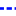

<!doctype html>
<html lang="en">
    <head>
        <meta charset="utf-8">
        <meta http-equiv="X-UA-Compatible" content="IE=edge">
        <meta name="viewport" content="initial-scale=1,user-scalable=no,maximum-scale=1,width=device-width">
        <meta name="mobile-web-app-capable" content="yes">
        <meta name="apple-mobile-web-app-capable" content="yes">
        <link rel="stylesheet" href="css/leaflet.css"><link rel="stylesheet" href="css/L.Control.Locate.min.css">
        <link rel="stylesheet" href="css/qgis2web.css"><link rel="stylesheet" href="css/fontawesome-all.min.css">
        <link rel="stylesheet" href="css/MarkerCluster.css">
        <link rel="stylesheet" href="css/MarkerCluster.Default.css">
        <link rel="stylesheet" href="css/leaflet-control-geocoder.Geocoder.css">
        <link rel="stylesheet" href="css/leaflet-measure.css">
        <style>
        html, body, #map {
            width: 100%;
            height: 100%;
            padding: 0;
            margin: 0;
        }
        </style>
        <title></title>
    </head>
    <body>
        <div id="map">
        </div>
        <script src="js/qgis2web_expressions.js"></script>
        <script src="js/leaflet.js"></script><script src="js/L.Control.Locate.min.js"></script>
        <script src="js/leaflet.rotatedMarker.js"></script>
        <script src="js/leaflet.pattern.js"></script>
        <script src="js/leaflet-hash.js"></script>
        <script src="js/Autolinker.min.js"></script>
        <script src="js/rbush.min.js"></script>
        <script src="js/labelgun.min.js"></script>
        <script src="js/labels.js"></script>
        <script src="js/leaflet-control-geocoder.Geocoder.js"></script>
        <script src="js/leaflet-measure.js"></script>
        <script src="js/leaflet.markercluster.js"></script>
        <script src="data/Lmitemunicipal_1.js"></script>
        <script src="data/Cicloestacionamientospropuestos_2.js"></script>
        <script src="data/Ciclovaspropuestas_3.js"></script>
        <script src="data/Cicloestacionamientosexistentes_4.js"></script>
        <script src="data/Ciclovasexistentes_5.js"></script>
        <script>
        var map = L.map('map', {
            zoomControl:true, maxZoom:28, minZoom:1
        }).fitBounds([[19.24961737029689,-99.72752857293803],[19.372693050374252,-99.55814627763691]]);
        var hash = new L.Hash(map);
        map.attributionControl.setPrefix('<a href="https://github.com/tomchadwin/qgis2web" target="_blank">qgis2web</a> &middot; <a href="http://leafletjs.com" title="A JS library for interactive maps">Leaflet</a>');
        L.control.locate({locateOptions: {maxZoom: 19}}).addTo(map);
        var measureControl = new L.Control.Measure({
            position: 'topleft',
            primaryLengthUnit: 'meters',
            secondaryLengthUnit: 'kilometers',
            primaryAreaUnit: 'sqmeters',
            secondaryAreaUnit: 'hectares'
        });
        measureControl.addTo(map);
        document.getElementsByClassName('leaflet-control-measure-toggle')[0]
        .innerHTML = '';
        document.getElementsByClassName('leaflet-control-measure-toggle')[0]
        .className += ' fas fa-ruler';
        var bounds_group = new L.featureGroup([]);
        function setBounds() {
        }
        var layer_GoogleMaps_0 = L.tileLayer('https://mt1.google.com/vt/lyrs=r&x={x}&y={y}&z={z}', {
            opacity: 1.0
        });
        layer_GoogleMaps_0.addTo(map);
        map.addLayer(layer_GoogleMaps_0);
        function pop_Lmitemunicipal_1(feature, layer) {
        }

        function style_Lmitemunicipal_1_0() {
            return {
                pane: 'pane_Lmitemunicipal_1',
                opacity: 1,
                color: 'rgba(0,0,0,1.0)',
                dashArray: '10,5',
                lineCap: 'butt',
                lineJoin: 'miter',
                weight: 2.0, 
                fill: true,
                fillOpacity: 1,
                fillColor: 'rgba(133,182,111,0.0)',
            }
        }
        map.createPane('pane_Lmitemunicipal_1');
        map.getPane('pane_Lmitemunicipal_1').style.zIndex = 401;
        map.getPane('pane_Lmitemunicipal_1').style['mix-blend-mode'] = 'normal';
        var layer_Lmitemunicipal_1 = new L.geoJson(json_Lmitemunicipal_1, {
            attribution: '',
            pane: 'pane_Lmitemunicipal_1',
            onEachFeature: pop_Lmitemunicipal_1,
            style: style_Lmitemunicipal_1_0,
        });
        bounds_group.addLayer(layer_Lmitemunicipal_1);
        map.addLayer(layer_Lmitemunicipal_1);
        function pop_Cicloestacionamientospropuestos_2(feature, layer) {
            var popupContent = '<table>\
                    <tr>\
                        <th scope="row">Nombre</th>\
                        <td>' + (feature.properties['Nombre'] !== null ? Autolinker.link(String(feature.properties['Nombre'])) : '') + '</td>\
                    </tr>\
                </table>';
            layer.bindPopup(popupContent, {maxHeight: 400});
        }

        function style_Cicloestacionamientospropuestos_2_0() {
            return {
                pane: 'pane_Cicloestacionamientospropuestos_2',
                radius: 8.0,
                opacity: 1,
                color: 'rgba(255,255,255,1.0)',
                dashArray: '',
                lineCap: 'butt',
                lineJoin: 'miter',
                weight: 2.0,
                fill: true,
                fillOpacity: 1,
                fillColor: 'rgba(255,35,1,1.0)',
            }
        }
        map.createPane('pane_Cicloestacionamientospropuestos_2');
        map.getPane('pane_Cicloestacionamientospropuestos_2').style.zIndex = 402;
        map.getPane('pane_Cicloestacionamientospropuestos_2').style['mix-blend-mode'] = 'normal';
        var layer_Cicloestacionamientospropuestos_2 = new L.geoJson(json_Cicloestacionamientospropuestos_2, {
            attribution: '',
            pane: 'pane_Cicloestacionamientospropuestos_2',
            onEachFeature: pop_Cicloestacionamientospropuestos_2,
            pointToLayer: function (feature, latlng) {
                var context = {
                    feature: feature,
                    variables: {}
                };
                return L.circleMarker(latlng, style_Cicloestacionamientospropuestos_2_0(feature));
            },
        });
        var cluster_Cicloestacionamientospropuestos_2 = new L.MarkerClusterGroup({showCoverageOnHover: false,
            spiderfyDistanceMultiplier: 2});
        cluster_Cicloestacionamientospropuestos_2.addLayer(layer_Cicloestacionamientospropuestos_2);

        bounds_group.addLayer(layer_Cicloestacionamientospropuestos_2);
        cluster_Cicloestacionamientospropuestos_2.addTo(map);
        function pop_Ciclovaspropuestas_3(feature, layer) {
        }

        function style_Ciclovaspropuestas_3_0() {
            return {
                pane: 'pane_Ciclovaspropuestas_3',
                opacity: 1,
                color: 'rgba(224,29,0,1.0)',
                dashArray: '1,5',
                lineCap: 'square',
                lineJoin: 'bevel',
                weight: 3.0,
                fillOpacity: 0,
            }
        }
        map.createPane('pane_Ciclovaspropuestas_3');
        map.getPane('pane_Ciclovaspropuestas_3').style.zIndex = 403;
        map.getPane('pane_Ciclovaspropuestas_3').style['mix-blend-mode'] = 'normal';
        var layer_Ciclovaspropuestas_3 = new L.geoJson(json_Ciclovaspropuestas_3, {
            attribution: '',
            pane: 'pane_Ciclovaspropuestas_3',
            onEachFeature: pop_Ciclovaspropuestas_3,
            style: style_Ciclovaspropuestas_3_0,
        });
        bounds_group.addLayer(layer_Ciclovaspropuestas_3);
        map.addLayer(layer_Ciclovaspropuestas_3);
        function pop_Cicloestacionamientosexistentes_4(feature, layer) {
            var popupContent = '<table>\
                    <tr>\
                        <th scope="row">Nombre</th>\
                        <td>' + (feature.properties['Nombre'] !== null ? Autolinker.link(String(feature.properties['Nombre'])) : '') + '</td>\
                    </tr>\
                </table>';
            layer.bindPopup(popupContent, {maxHeight: 400});
        }

        function style_Cicloestacionamientosexistentes_4_0() {
            return {
                pane: 'pane_Cicloestacionamientosexistentes_4',
                radius: 8.0,
                opacity: 1,
                color: 'rgba(255,255,255,1.0)',
                dashArray: '',
                lineCap: 'butt',
                lineJoin: 'miter',
                weight: 2.0,
                fill: true,
                fillOpacity: 1,
                fillColor: 'rgba(1,5,255,1.0)',
            }
        }
        map.createPane('pane_Cicloestacionamientosexistentes_4');
        map.getPane('pane_Cicloestacionamientosexistentes_4').style.zIndex = 404;
        map.getPane('pane_Cicloestacionamientosexistentes_4').style['mix-blend-mode'] = 'normal';
        var layer_Cicloestacionamientosexistentes_4 = new L.geoJson(json_Cicloestacionamientosexistentes_4, {
            attribution: '',
            pane: 'pane_Cicloestacionamientosexistentes_4',
            onEachFeature: pop_Cicloestacionamientosexistentes_4,
            pointToLayer: function (feature, latlng) {
                var context = {
                    feature: feature,
                    variables: {}
                };
                return L.circleMarker(latlng, style_Cicloestacionamientosexistentes_4_0(feature));
            },
        });
        var cluster_Cicloestacionamientosexistentes_4 = new L.MarkerClusterGroup({showCoverageOnHover: false,
            spiderfyDistanceMultiplier: 2});
        cluster_Cicloestacionamientosexistentes_4.addLayer(layer_Cicloestacionamientosexistentes_4);

        bounds_group.addLayer(layer_Cicloestacionamientosexistentes_4);
        cluster_Cicloestacionamientosexistentes_4.addTo(map);
        function pop_Ciclovasexistentes_5(feature, layer) {
        }

        function style_Ciclovasexistentes_5_0() {
            return {
                pane: 'pane_Ciclovasexistentes_5',
                opacity: 1,
                color: 'rgba(1,13,255,1.0)',
                dashArray: '1,5',
                lineCap: 'square',
                lineJoin: 'bevel',
                weight: 3.0,
                fillOpacity: 0,
            }
        }
        map.createPane('pane_Ciclovasexistentes_5');
        map.getPane('pane_Ciclovasexistentes_5').style.zIndex = 405;
        map.getPane('pane_Ciclovasexistentes_5').style['mix-blend-mode'] = 'normal';
        var layer_Ciclovasexistentes_5 = new L.geoJson(json_Ciclovasexistentes_5, {
            attribution: '',
            pane: 'pane_Ciclovasexistentes_5',
            onEachFeature: pop_Ciclovasexistentes_5,
            style: style_Ciclovasexistentes_5_0,
        });
        bounds_group.addLayer(layer_Ciclovasexistentes_5);
        map.addLayer(layer_Ciclovasexistentes_5);
        var osmGeocoder = new L.Control.Geocoder({
            collapsed: true,
            position: 'topleft',
            text: 'Search',
            title: 'Testing'
        }).addTo(map);
        document.getElementsByClassName('leaflet-control-geocoder-icon')[0]
        .className += ' fa fa-search';
        document.getElementsByClassName('leaflet-control-geocoder-icon')[0]
        .title += 'Search for a place';
        var baseMaps = {};
        L.control.layers(baseMaps,{' Ciclovías (existentes)': layer_Ciclovasexistentes_5,' Cicloestacionamientos (existentes)': cluster_Cicloestacionamientosexistentes_4,' Ciclovías (propuestas)': layer_Ciclovaspropuestas_3,' Cicloestacionamientos (propuestos)': cluster_Cicloestacionamientospropuestos_2,' Límite municipal': layer_Lmitemunicipal_1,"Google Maps": layer_GoogleMaps_0,},{collapsed:false}).addTo(map);
        setBounds();
        </script>
    </body>
</html>
